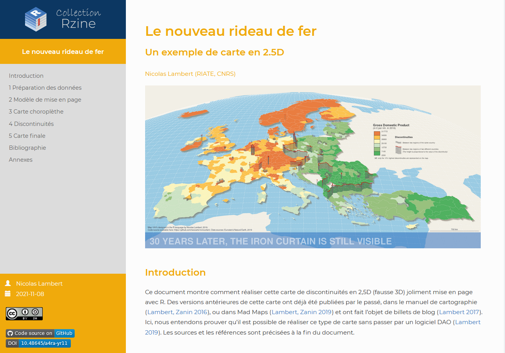
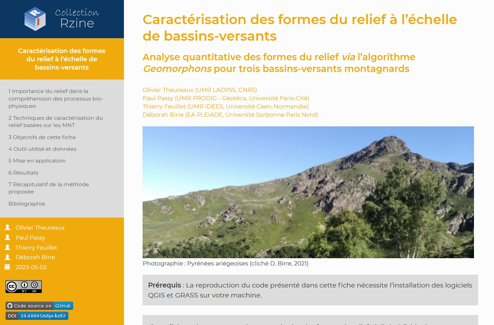

Rzine
Contribuer à la pratique de R en SHS

Rencontres R 2023 - Avignon
 Un projet exploratoire
Un projet exploratoire
- Démarré en 2018 et soutenu par le Collège International des Sciences Territoriales (FR CIST).
- 5 membres fondateurs issues de 4 unités de recherches différentes.
- Projet interdisciplinaire, collectif et à portée pédagogique.
- Aucune obligation de résultats ni de livrables. Renouvelable tous les 3 ans.
Objectif annoncé :
Produire collectivement de la documentation sur la pratique de R pour les sciences humaines, sociales et territoriales, pour contribuer à une montée en compétence collective.
 2018 : faire le bilan pour innover
2018 : faire le bilan pour innover
Points forts et faibles de la communauté et des ressources disponibles ?
(pour un·e utilisateur·rice débutant·e en SHS)
- Communauté d’utilisateur·rices active
- De bonnes initiatives francophone existent déjà
- Beaucoup de ressources en libre accès
- Langage commun à plusieurs disciplines de SHS/ST
- Ressources majoritairement en anglais
- Ressources diverses en format et en contenu
- Mise à jour et reproductibilité des ressources
- Ressources éparses et parfois peu visibles
- Parfois cloisonnées par discipline/communauté
- Couverture thématique très inégale
 2019 : des objectifs plus ambitieux
2019 : des objectifs plus ambitieux
Pour réellement participer à la monté en compétence collective des utilisateur·rices en SHS, Rzine devait se doter d’objectifs plus ambitieux que la production de ressources supplémentaires…
I. Mise en avant de l’existant : Rzine.fr
- Référencer les initiatives existantes et les acteurs de la communauté
- Favoriser la diffusion et le partage de ressources diverses
- → Dessiner les contours de la pratique de R en SHS (et ST)

II. Favoriser le partage de méthodes reproductibles
- Encourager l’utilisation de la programmation lettrée et des Notebooks
- Initier et former à l’utilisation des forges et du déploiement (CI/CD).
- → Offrir un espace de partage normalisé : Collection de publication

 Un blogdown partagé via GitLab
Un blogdown partagé via GitLab
Rzine.fr est développé avec R :
Rzine.fr est porté par l’enseignement supérieur et la recherche :
- Code source partagé et compilé sur l’instance GitLab de l’IR*

- Site hébergé par un serveur de l’Université Rouen-Normandie

- Un nom de domaine qui appartient au

 Un contenu…
Un contenu…
Qui dessine les contours de la pratique de R en SHS :
- Des ressources diverses, catégorisées par types et thématiques
- Des initiatives qui contribuent à l’animation de la communauté
- Des auteur·es de ressources référencées sur le site
- Des actualités sur la communauté (évènements, formations…)
L’ensemble du contenu est maîtrisé par un comité éditorial
 Comité éditorial : de 5 à 13 membres
Comité éditorial : de 5 à 13 membres
- 2018 - Hugues Pecout (CNRS, UMR Géographie-Cités)
- 2018 - Timothée Giraud (CNRS, UAR RIATE)
- 2018 - Sébastien Rey-Coyrehourcq (Univ. de Rouen-Normandie, UMR IDEES)
- 2018 - Marion Le Texier (Université Paul Valéry - Montpellier 3, LAGAM)
- 2018 - Laurent Beauguitte (CNRS, UMR Géographie-Cités)
- 2020 - Grégoire Le Campion (CNRS, UMR Passages)
- 2020 - Ronan Ysebaert (Université de Paris Cité, UAR RIATE)
- 2020 - Violaine Jurie (Université de Paris Cité, Géotéca)
- 2021 - Marion Gentilhomme (Université Paris 1 Panthéon-Sorbonne, FR CIST)
- 2022 - Raphaëlle krummeich (Univ. de Rouen-Normandie, UMR IDEES)
- 2023 - Sébastien Plutniak (CNRS, UMR CITERES)
- 2023 - Marion Maisonobe (CNRS, UMR Géographie-Cités)
- 2023 - Julie Gravier (EHESS, UMR CAMS/CRH)
Différents statuts & profils, mais encore trop de géographes !
Différents niveaux d’implication et tâche en fonction du temps et des compétences
1 membre = 1 voix
 Critères pour l’ajout de contenu
Critères pour l’ajout de contenu
- Gratuité de la ressource, sans renvoi publicitaire évident
- Respect du RGPD
- Rédaction dans un français ou un anglais correct
- Concerne des méthodes applicables aux SHS/ST
- Clarté et rigueur de la ressource
- Clarté et fonctionnement du code présenté
- Intérêt pour la communauté SHS/ST
- Pérennité du mode de stockage
- Mise à disposition des données utilisées
- Mise à disposition du code source
Critères délibérément flous afin de garder une certaine souplesse
L’objectif est d’offrir un corpus de ressources utiles et exhaustives
 Participez !
Participez !
 Depuis 2021, une collection pour :
Depuis 2021, une collection pour :
- Offrir un espace de publication qui permet de valoriser et diffuser des méthodes et analyses.
- Contribuer à la diffusion de méthodes innovantes ou restées confidentielles.
- Promouvoir l’utilisation de la programmation lettrée, des notebooks et des forges en SHS/ST.
- Contribuer à la diffusion de bonnes pratiques en matière de reproductibilité.
- Favoriser les échanges entre disciplines.
→ Une collection pour partager et valoriser ses méthodes et analyses reproductibles réalisées avec R dans un périmètre pluridisciplinaire. L’ouverture de la science ne se limite pas aux données et aux articles.
 Caractéristiques
Caractéristiques
- Collection ouverte à tou·te·s
- Périmètre interdisciplinaire (SHS et Sciences Territoriales)
- Format de publication notebook (Rmarkdown, HTML)
- Publications soumises à comité de lecture
- Processus de relecture transparent sur GitHub
- Processus de d’édition sur GitHub/GitLab
- Publications open source (licences MIT & CC BY-SA 4.0)
- Informations + données nécessaires à la reproductibilité fournies
- Stockage et diffusion sur Rzine.fr (DOI, HAL, Nakala)
 Fiche Rzine ?
Fiche Rzine ?
Document qui présente une méthodologie, un type d’analyse, une fonctionnalité, ou encore le traitement d’un certain type de données réalisé avec R, de façon reproductible et didactique afin d’en faciliter son application pratique.
Une fiche peut être fortement axée sur un aspect technique ou méthodologique, mais elle doit impérativement s’ancrer dans une thématique des sciences humaines, sociales ou territoriales.
Une fiche doit être intelligible par des personnes issues de différentes disciplines.
 Publier une fiche ?
Publier une fiche ?
Règles de mise en page et de soumission : Publier une fiche Rzine
Template de fiche : package Rzine* - https://gitlab.huma-num.fr/rzine/package
*Largement inspiré du template readthedown du package rmdformats développé par Julien Barnier.
 Premières publications
Premières publications

Spatio-temporal Wikidata. Exploration de données collaboratives du web 3.0
 Prochains objectifs
Prochains objectifs
I. Rzine.fr
- Poursuivre l’administration et l’alimentation du site.
- Fluidifier le processus de vote et d’ajout de contenu.
- Renforcer l’interdisciplinarité du comité éditorial.
- Amener les utilisateur·rices en SHS à soumettre d’avantage de contenu..
II. Collection Rzine
- Améliorer le processus de relecture et d’édition.
- Travailler sur l’aspect reproductible des publications.
- Proposer un modèle de mise en page Quarto.
Merci de votre attention
Diaporama : https://rzine.gitpages.huma-num.fr/communications/rr2023/
Code source : https://gitlab.huma-num.fr/rzine/communications/rr2023